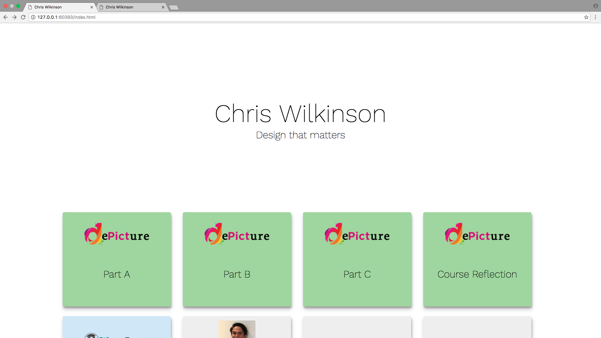
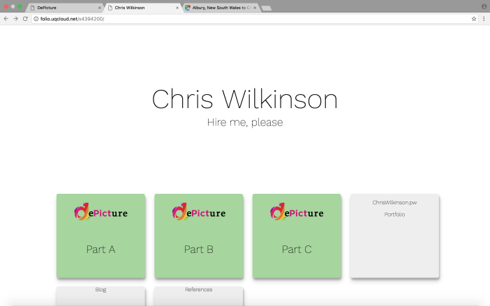
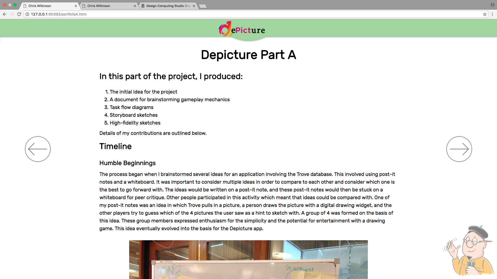
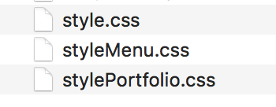
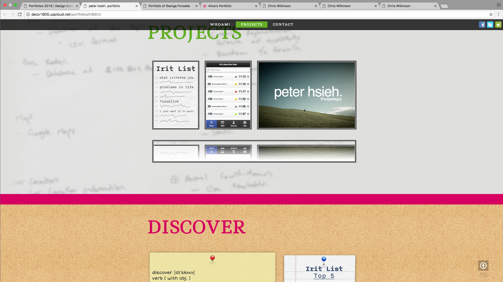
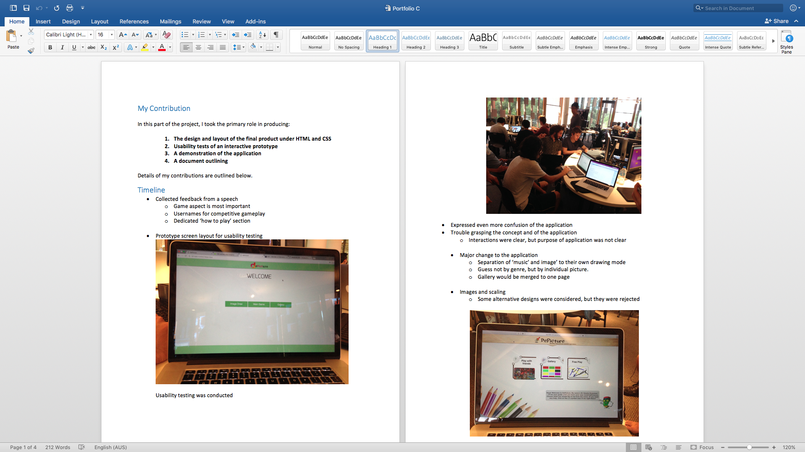
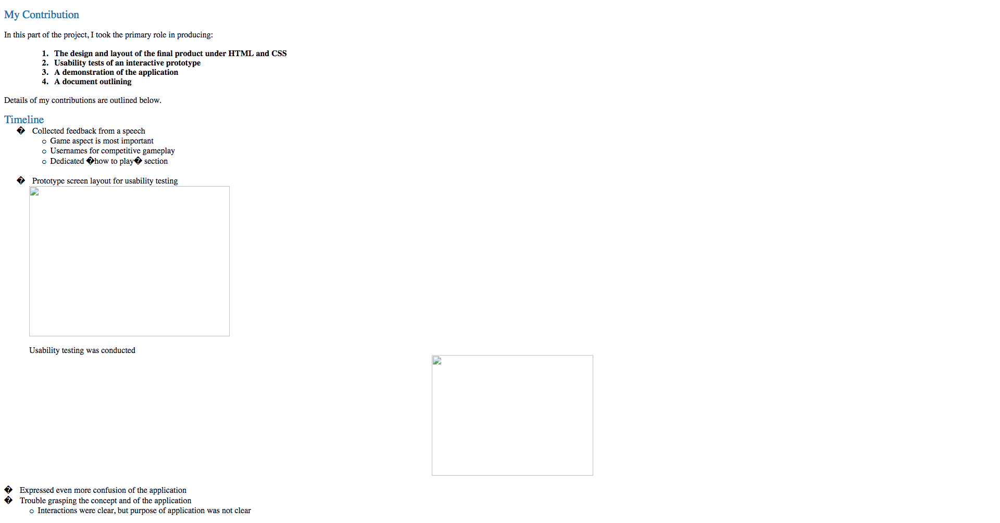
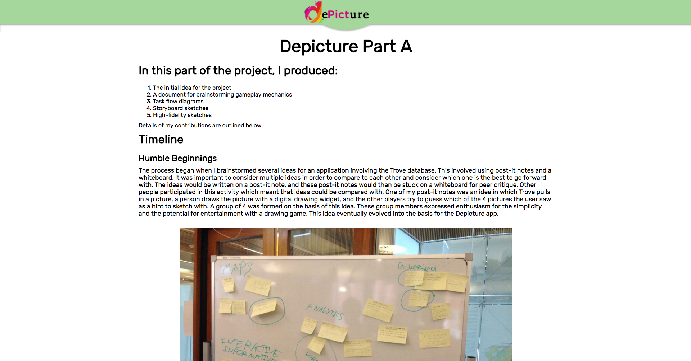
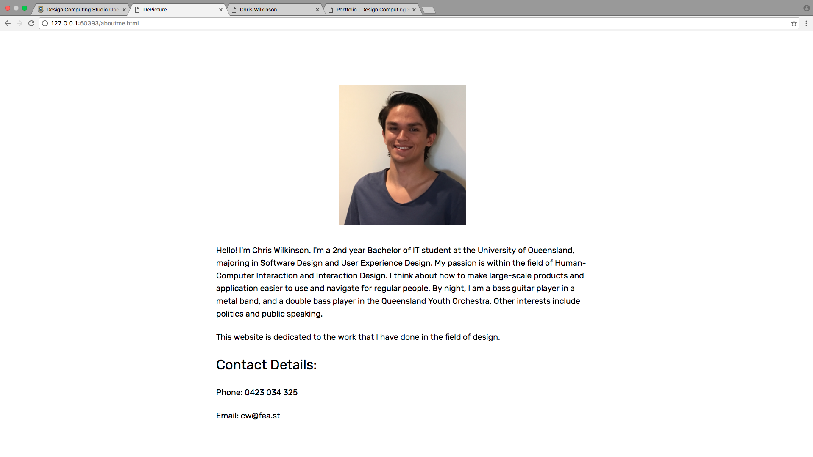

Portfolio
Description
My portfolio is a website designed to showcase my work and design process to the public. It was created with HTML, CSS and jQuery elements. My design process is outlined below:
Timeline
My design process began with a brainstorming of how to design my website. I wanted to create a website that was not a traditional website layout in order to attract attention to my website.
Ideas considered for the portfolio design include:
- A “picture book” format of the portfolio with a mascot that represented me. Vertical scroll through the page to find out more about me and my designs.
- A “timeline” format. Page would start on the right side with the most recent work, and the user could scroll to the left to find earlier designs. All designs would be on one page.
- Blank main page with a grid system. Clicking on a design on the grid adjusted the page theme to suit the theme of the design.
I settled on the third design, as it would be unique as well be easier than the other two to produce. My name would be on the top, a subtitle below my name, and a 4 column grid of designs below the subtitle. Very little elements would be on screen in order to achieve a clean, modern, and thoughtful design. In order to design the website such that the website does not look 'bland', various transition animations were created in jQuery in order to take the website design beyond just static elements.

I considered placing a background video on the site, such an ink drop, or a ribbon wave, but this proved to be difficult to implement and delayed the loading of the website. This idea was scrapped.
The idea of the website is that the main menu will look plain initially, but as the user clicks on each project, the website dynamically changes in style to the project. For example, when the user clicks on a dePicture button, the dePicture header will appear, and the font style will change to look like the project. This way the user is fully immersed in the project design, instead of just looking at pictures of the project. It is hoped that this will increase the user's understanding of my design decisions and will let the user easily experience the visual elements of my projects without having to read the content.

In order to achieve different stylings for different projects, I realised that my CSS code was getting far too complicated to manage for multiple projects. To combat this, I split my CSS file into three different files. Each project will use their own individual CSS file:

While this this is not reccommended by website designers, this was essential to organising the rapidly changing stylings in my website.
In order to collect ideas for the design, I looked at other portfolios from previous students. Peter Hseigh's portfolio was one single long page. The user could scroll down and see a timeline of all the projects that the he had made. This inspired to me to create long, scrollable pages for each project, with the design process organised from earliest to latest.

dePicture
The main project in which I would be showcasing is my work on dePicture. The content I wrote was first initially written in a Microsoft Word document:

My plan was to export the document into HTML format, but this proved to be not very effective:

I knew that I would have to place all the elements on screen by hand. An early version of the site is shown below:

I felt like that this design was very plain at this point. I decided to import the dePicture mascot into the portfolio, and create some arrow images in order to let the user easily navigate back and forth on the website. These design elements were incorporated into the final product:
the dePicture design process was split into 3 parts in order to increase detail and readability.
About Me
The "About Me" page was kept plain in order to keep consistent with the site's main menu design.

Portfolio
After doing the dePicture project, I worked on the "Portfolio" page. The font style was kept as close as possible to the main menu font.

Reflection
Overall, I believe that the project was a success. I believe that the portfolio is a very effective way to communicating my designs to regular people and even prospective employers. The animation proved to be an effective way for making the page 'come alive', and I have heard a few positive comments from those who I showed my website to. The website was not too complicated to create, which meant that I could focus my time on creating the content, rather than implementing complicated website features.
The project also has it's fair share a failures. Most of the problems with the website stemmed from my thought that since the portfolio was not a large scale project, I could take some shortcuts in the design process. This was definitely not the case. Firstly, I believe that I did not do enough sketching of designs. Most of my ideas were typed up in a document rather than sketched in Photoshop or on a piece of paper. If I had sketched my ideas, I would be able to see which ideas would work, which one wouldn't, and how I could improve on my design. I believe that not enough time was allocated to polishing the animations of the website. There were many animations in the website that I would like to have implemented, but I underestimated how long it would take to implement these features. I also would have liked to have done some usability testing of the website in order to determine if the interaction on the website make sense to other users. If I had more time, I would also create a theme for the 'about me' page in order to diversify the themes on the website in order to communicate the idea of a dynamically changing website.
Improvements Suggested
I would improve upon the design process in these following ways:
- Sketch all proposed designs - In the next project, I will draw ALL of my proposed designs with pen and paper to determine their viability as a design, and how aesthetically pleasing they are. This means I can iterate upon the draft design, and even incorporate elemets from one design to another. This is vitally important for the design process.
- Leave more time for animation features and compatibility issues - I will leave at least 7 days for implementing all animations on a website. This can be a much more difficult task then initially thought, so a week will be left aside for these features. I will also leave 3 days for fixing cross-browser compatibility issues, and it is absolutely essential that the website is compatible across all modern browsers.
- Always make time for usabilty testing - Even if the project is not group work nor a large scale project, I will always make time for usability testing. Usability testing ensures that feedback is given on the design of the website before it is published. Releasing an application without usability testing is dangerous, because a major issue with the application could be apparent, which would mean that resources would have to be spent fixing issues that could have been spotted early.
I would improve upon the portfolio in these following ways:
- More animations - Despite the fact that the portfolio features many animations, I would make time to implement more animations between pages.
Animations are what separates modern pages from old, static pages. Animations are also very visually appealing to the user if done right.
- Consider a background video for the main page - In light of animations, I will reconsider a background video at the top of the main menu page. A background video will fill in the abundance of white spacee currently, and will perpetuate the idea that the site is 'alive' with animations. More work will have to be done to figure out how to make a background video easy to load, and will not impact on the user's system resources on their browser.
Overall, I am very proud of my work, and I will proudly show my portfolio to prospective employers.